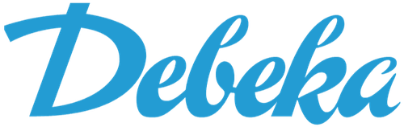
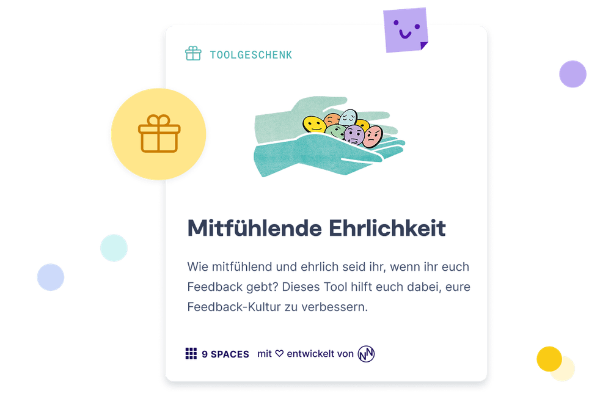
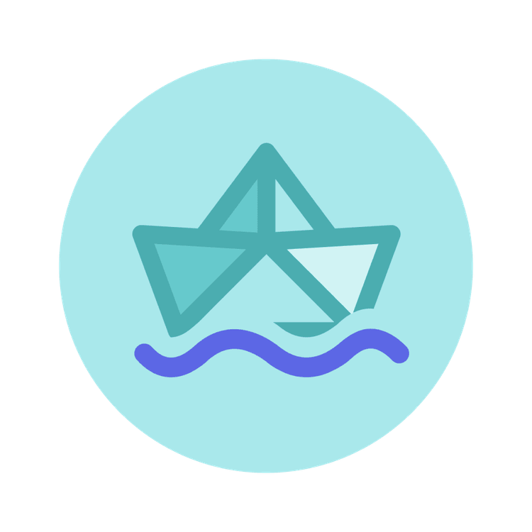
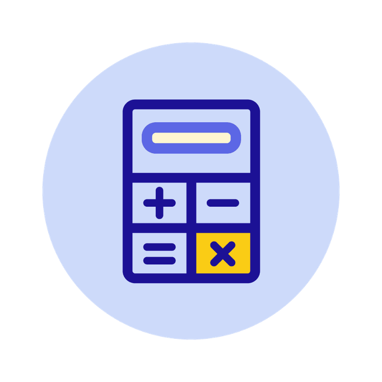

Business
ab 5 Nutzer*innen
Zugang für ausgewählte Nutzer*innen
9 Spaces ist die 360°-Lösung für lernende Organisationen. Skaliert Transformationswissen in eure Teams hinein und schafft eine Kultur des Lernens und der Entwicklung.

Auf dieser Seite erfährst du, wie Team-Entwicklung endlich wirksam wird, auch ohne viel Zeit, Budget oder Kapazität.


Wie schön, dass du hier bist. Hol dir jetzt dein exklusives Geschenk und bring mit dem Tool „Mitfühlende Ehrlichkeit“ eine ehrliche, gesunde und konstruktive Feedback-Kultur ins Team.
Impact erhöhen, Strukturen verbessern und einfach gut zusammen arbeiten. Auf 9 Spaces findet ihr mehr als 120 Workshop-Formate – so erklärt, dass jeder Mensch sie mit < 1 Stunde Vorbereitungszeit durchführen kann. Treibt die New-Work-Transformation in eurer Organisation voran!

Wir glauben an die Transformation von Innen. Und helfen euch dabei, sie bei euch zur Realität werden zu lassen.

Gebt Führungskräften und ihren Teams das Handwerkszeug, ihre Entwicklung selbst in die Hand zu nehmen. Macht Transformation skalierbar, indem ihr viele kleine (Team-) Boote in Bewegung bringt.

Mit 9 Spaces bekommt ihr eine umfassende Bibliothek an erprobten Methoden, die ihr in eure bestehende Learning & Development-Infrastruktur integrieren könnt. Ladet unsere Tools in euer LMS, teilt sie im Sharepoint, verschickt sie per E-Mail. Setzt Impulse!

Behaltet die Kontrolle über eure Account-Verwaltung. Als HR-Bereich entscheidet ihr zentral, wer einen Zugang zur Workshop-Plattform bekommt. Nur ihr könnt Sitze hinzufügen.

Viele der 4.500 Mitarbeiterinnen und Mitarbeiter von Lufthansa Technik stecken in Arbeitstagen mit Meeting-Endlosschleifen fest. Eine interne Community aus Facilitatoren soll das mithilfe von 9 Spaces ändern – und eine neue Meeting-Kultur etablieren.
Zugang für ausgewählte Nutzer*innen
Unbegrenzter Zugang für alle Mitarbeitenden

Lass uns darüber austauschen, wie dein Team oder deine Organisation das volle Potenzial von 9 Spaces ausschöpfen kann. Mit echten Beispielen aus anderen Organisationen.